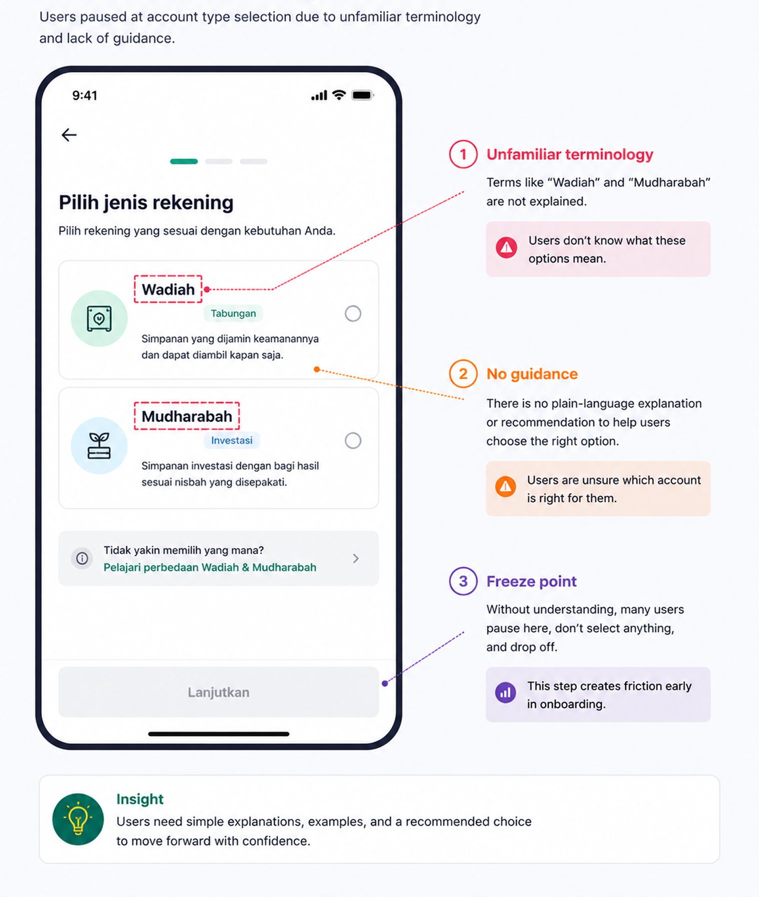

Mapping What Users Actually Need from a Banking App Built for Three Banks, Three Goals, and One Faith
Some details have been intentionally generalized or omitted due to confidentiality.
Opening context
Three Islamic banks merged into one.
The new bank needed a single mobile app for users with very different habits, expectations, and levels of digital banking experience.
The team thought this was a redesign problem.
The research showed it was actually a mental model problem.
The research question
How should one banking app support users whose goals range from daily transactions, to religious giving, to preparing for a pilgrimage to Mecca?
How I approached it
What I found
Finding 01
Users did not see Islamic banking as just "banking."
Users consistently described three different goals — and that framework became the foundation for feature prioritization across the entire app.
- Savings
- Investment
- Budgeting
- Prayer Times
- Quran
- Hajj Planning
- Zakat
- Donations
- Waqf
Three-goal framework — became the foundation for feature prioritization across the app
Finding 02
Users grouped features differently than the bank did.
The bank organized features around internal products. Users organized them around intentions.
For example: charity features were grouped with payments, religious content was grouped with lifestyle, and QR payments repeatedly landed in unexpected categories.
The final information architecture reorganized 27 features into 7 categories based on how users actually think.
| Bank structure | User structure |
|---|---|
| Islamic Services | Payments |
| Transfers | Daily Activities |
| QRIS | Payments |
| Charity Features | Donations |
Bank structure vs. user structure — replaces the IA explanation above
Finding 03
Islamic banking terminology made users hesitate.
Terms like these appeared during onboarding without explanation:
Many users froze because they did not know what the terms meant, which option to choose, or whether choosing wrong mattered.
An unexpected additional insight: users wanted religious features like prayer times and Quran access available without login — because they did not see them as "banking features" at all.

What changed
| Outcome | Impact |
|---|---|
| Three-goal framework | Used for feature prioritization across the app |
| New information architecture | 27 features reorganized into 7 categories based on user mental models |
| Faster onboarding | Reduced from 10+ steps to under 5 |
| Religious features | Moved to pre-login access — no longer treated as banking features |
Reflection
This project changed how I think about research handoff. In consulting, the work often stops after delivery. But the real test happens later, when findings meet technical constraints and stakeholder priorities.
That experience pushed me toward in-house research, where I could stay closer to implementation and long-term product decisions.